お久しぶりです。打倒チアリーダーの方の古田真緒です。
この投稿は、「無線でキーボード入力がしたい！」と思った筆者が
同じことをしようとしている人の役に立ったらいいなと考えた結果、
生み出されたものです。
目次。
マイコンボード。これを機会に買ってバリバリ開発しよう！
–簡単！Bluetooth(R)-シリアル(UART)モジュール [RBT-001]
技適取得済みのBluetooth2.0(SPP/GAP/SDAP)モジュール。
RBT-001をArduinoで使うために5Vの電圧を3Vに変換する。
-タクトスイッチ(必要数)
-他ブレッドボードやジャンプワイヤ、マイクロBケーブルなど、
Arsuino Leonardoの開発に使うもの。
送料込みで合計で1万円前後。

※図のコンバータはイメージです。 後述の配線通りに配線を繋いでください。
① タクトスイッチ
それぞれArduinoの「デジタル0ピン、1ピン、2ピン」とGNDに繋ぎます。
② RBT-001用シリアルレベルコンバータ Rev.3(青い小さなマイコンボード)
同梱のピンヘッダでボードに挿し込み、以下のようにArduinoに繋ぎます。
GND→GND
5Vin→5Vピン
RX→デジタル10ピン
TX→デジタル11ピン
CTSとRTSは繋ぐ必要はありません。
③ Bluetoothモジュール RBT-001
コンバータに重なるように繋ぎます。このときBluetoothモジュールのLEDランプが点灯するように調整します。

④ Arduino Leonardo
配線が終わったらPCに繋ぎ、Arduinoにプログラムを書き込みます。
プログラムを載せますが、GitHubのURLは後日追記します。
配線が終わったら電源（バッテリー可）に繋ぎます。
Seri2keyというアプリケーションを使います。
ダウンロードをしてください。
説明はリンク先のブログにあるので省きますが、要約すると
「シリアル通信をキーボード入力に変換するアプリ」という認識で
問題ありません。
⑤ PC
Windowsキーを押し、「プログラムとファイルの検索」から「Bluetooth」で検索、
「Bluetooth設定」を起動。「新しい接続」をクリックします。
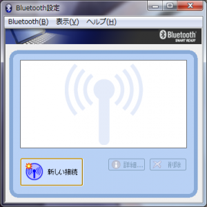
「カスタムモード」を選択して「次へ」をクリックします。
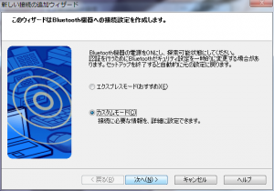
「EasyBT」を選択して「次へ」をクリックします。
「EasyBT」が表示されない場合は「更新」をクリックして表示されるまで繰り返すか、Bluetoothモジュールが動作しているか確認しましょう。
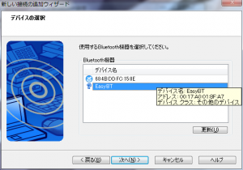
特に変更は必要ないので「次へ」をクリックします。
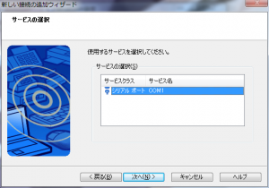
「デフォルトのCOMポートを使用する」からチェックを外し、プルダウンメニューからCOM2を選びます。COM2が表示されない場合は数字が1桁なら問題ありません。
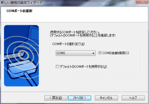
「次へ」をクリックします。
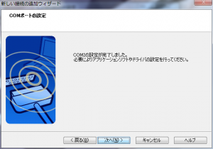
「次へ」をクリックします。
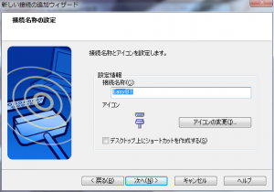
「次へ」を選び続けます。
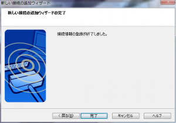
画像のようなアイコンが表示されるのでアイコンを「右クリック」→「接続」を選択。
初期設定ではPinコードの入力画面が表示されるので「0000」と入力して接続しましょう。
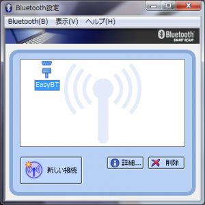
画像のように表示されれば接続成功です。
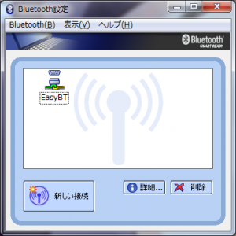
「Seri2Key.exe」を起動します。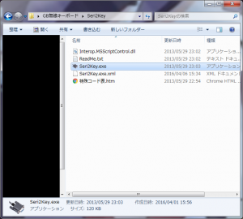
画面右下のアイコンを右クリック→「設定」を選択。
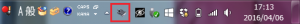
「ポート番号」をBluetooth設定をしたときと同じCOMに設定します。
今回はCOM2に設定したのでプルダウンメニューからCOM2を選択します。
選択したら「OK」をクリックします。
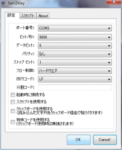
最後にもう一度アイコンを右クリックして「接続」を選択します。
「接続に失敗しました」と出なければ接続成功です。
メモ帳などでキーボード入力になっているかをチェックしましょう。
これで完成です。
ゲーム開発で無線キーボード操作で開発する時に役に立つと思います。